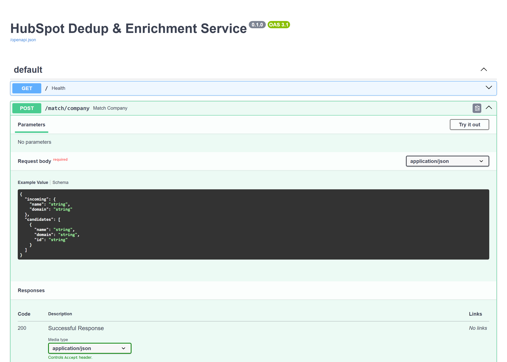
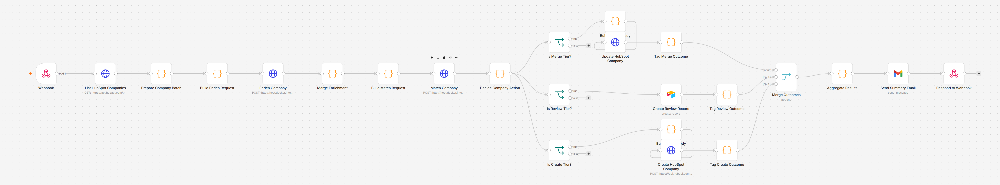
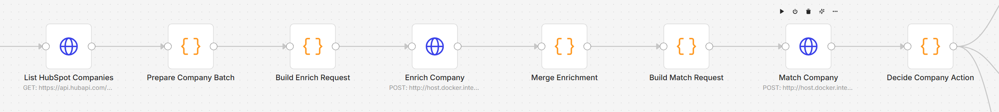
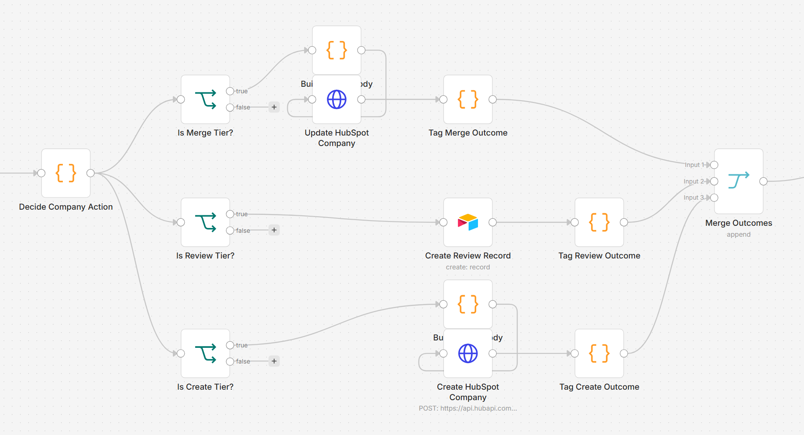
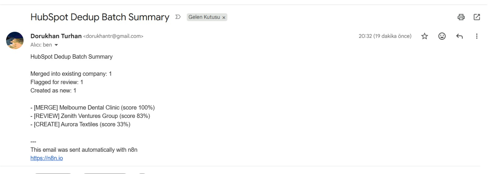

Positioned as a "CRM Automation & n8n Specialist | Python, API, HubSpot" on Upwork, but most of my shipped work leaned on n8n's no-code layer — this project exists to prove the other half of that title. It's a real, standalone Python microservice (not an n8n Code node) that fuzzy-matches incoming company records against HubSpot, and an n8n workflow that turns those matches into confidence-scored decisions: merge automatically when it's obviously the same company, ask a human when it's ambiguous, create fresh when it's genuinely new. Built and tested against real duplicate data already sitting in a live HubSpot test portal — three separate "Melbourne Dental Clinic" records from earlier testing, exactly the kind of mess this is meant to clean up.

A real Python service, not a Code node
The fuzzy-matching logic — comparing company names and domains, scoring how likely two records are the same business — runs in a standalone FastAPI service with its own endpoints (/match/company, /match/contact, /enrich/company), not embedded inside an n8n Code node. n8n owns every authenticated call (HubSpot, Airtable, Gmail); the Python service holds no credentials of its own and only does compute — matching via rapidfuzz, and a lightweight enrichment step that fetches a company's own website and pulls its title and description to fill in gaps.

Confidence-scored decisions, not blind automation
A score above 85% merges straight into the matching HubSpot record — no ambiguity, no risk. Below 50%, it's clearly a new company and gets created. Anything in between is the dangerous middle ground where blind automation actually causes damage, so those go to an Airtable review queue instead, with the score and the candidate it almost matched, for a human to approve or reject. Every batch run also fires a summary email — merged / flagged / created counts — so nothing needs manual monitoring to know what happened.


Tech stack
- Python — FastAPI microservice, rapidfuzz for matching, BeautifulSoup for lightweight website enrichment
- Automation — n8n (self-hosted via Docker), built and tested through n8n's REST API, not just the visual editor
- HubSpot API — real CRM reads/writes (GET/PATCH/POST on the Companies object) authenticated via a HubSpot Private App token
- Review queue — Airtable, holding medium-confidence matches for human approval
What it demonstrates
- Splitting compute from orchestration — a real backend service doing the matching, n8n doing the auth and data flow, each doing what it's good at
- Confidence-scored automation instead of all-or-nothing — the pattern CRM-hygiene clients actually want, not blind merging
- Direct HubSpot REST API integration, not just a no-code connector — comfortable working below the abstraction when it's the more reliable path
- Same API-driven build-and-verify workflow as the rest of this portfolio — built and tested via n8n's REST API and real execution logs, not just clicked together in the editor